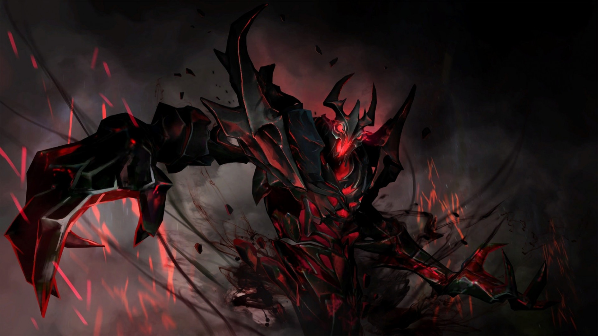
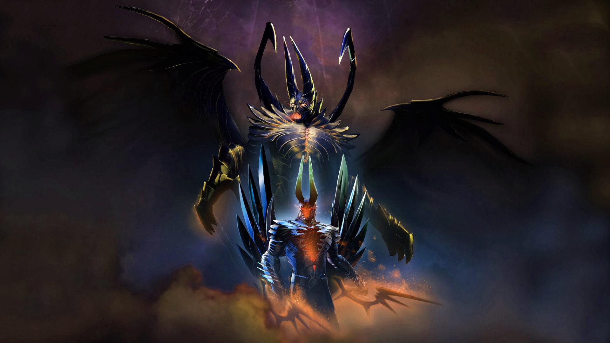

Оновлення 7.21 С
1) Общие изменения Теперь соперники получают 35% опыта за неотданных вами крипов вместо 30% 2) Изменения предметов Drum of Endurance Стоимость рецепта повышена с 500 до 600 монет Hand of Midas Бонусное золото уменьшено со 180 до 160 монет 3) Изменения героев Abaddon Abaddon Урон/лечение от Mist Coil увеличены со 100/150/200/250 до 120/165/210/255 Alchemist Alchemist Радиус Acid Spray увеличен с 400/475/550/625 до 475/525/575/625 единиц Ancient Apparition Ancient Apparition Прирост интеллекта увеличен с 3 до 3.4 Длительность эффекта Ice Blast увеличена с 9/10/11 до 10/11/12 секунд Bounty Hunter Bounty Hunter Прирост ловкости уменьшен с 3.1 до 2.6 Broodmother Broodmother Прирост ловкости увеличен с 2.5 до 2.8 Таланты 15 уровень: бонус к ловкости увеличен с 15 до 20 Chen Chen Бонусный урон Divine Favor уменьшен с 12/24/36/48 до 8/16/24/32 Множитель урона по негероям от Divine Favor увеличен с 2x до 3x Death Prophet Death Prophet Длительность применения Silence уменьшена с 0.5 до 0.4 секунды Стоимость Crypt Swarm снижена со 105/120/140/165 до 85/110/135/160 единиц маны Таланты 15 уровень: бонус к дальности применения увеличен со 150 до 175 Elder Titan Elder Titan Бонусный урон от Astral Spirit за крипа уменьшен с 6/9/12/15 до 3/7/11/15 Enchantress Enchantress Урон Impetus увеличен с 16/20/24% до 16/22/28% Juggernaut Juggernaut Скорость передвижения Healing Ward снижена с 400 до 350 Kunkka Kunkka Tidebringer больше не увеличивает урон по союзным существам Lifestealer Lifestealer Прирост силы снижен с 3.2 до 2.9 Lina Lina Таланты Уровень 20: бонус за заряд Fiery Soul увеличен с 25/2 до 30/2% Уровень 20: бонус к урону от способностей увеличен с 12 до 14% Luna Luna Количество ударов Eclipse увеличено с 5/8/11 до 6/9/12 Lycan Lycan Прирост силы снижен с 3.8 до 3.4 Medusa Medusa Прирост интеллекта увеличен с 2.1 до 2.6 Meepo Meepo Прирост ловкости увеличен с 23 + 1.6 до 24 + 1.8 Прирост силы увеличен с 1.6 до 1.8 Mirana Mirana Прирост интеллекта увеличен с 17 + 1.7 до 19 + 1.9 Monkey King Monkey King Mischief больше не дает неуязвимость, а делает вас невосприимчивым к урону Morphling Morphling Прирост силы увеличен с 2.6 до 3.0 Nature's Prophet Nature's Prophet Урон юнитов от Nature's Call снижен с 36 до 27/30/33/36 Pangolier Pangolier Lucky Shot теперь не работает на иллюзиях Pangolier Замедление от Lucky Shot снижено с 40% до 35% Phantom Assassin Phantom Assassin Прирост ловкости снижен с 3.7 до 3.4 Phantom Lancer Phantom Lancer Бонус к ловкости от Phantom Rush увеличен с 9/18/27/36 до 11/22/33/44 единиц Queen of Pain Queen of Pain Базовый показатель интеллекта увеличен на 3 (базовый урон не изменился) Урон от Sonic Wave увеличен с 320/410/500 до 340/430/520 единиц Riki Riki Базовая скорость передвижения увеличена на 5 единиц Sand King Sand King Базовый показатель интеллекта увеличен на 3 Shadow Fiend Shadow Fiend Базовый показатель силы увеличен на 2 Shadow Shaman Shadow Shaman Время перезарядки Shackles увеличено с 10 до 16/14/12/10 секунд Sniper Sniper Урон от Headshot увеличен с 20/50/80/110 до 30/60/90/120 Время перезарядки зарядов Shrapnel снижено с 55 до 50 секунд Spirit Breaker Spirit Breaker Базовая регенерация здоровья увеличена на 0.75 единицы Storm Spirit Storm Spirit Electric Vortex теперь не накладывает замедление на вашего героя Sven Sven Прирост силы снижен с 3.5 до 3.2 Techies Techies Время перезарядки Remote Mines снижено с 10 до 8 секунд Templar Assassin Templar Assassin Прирост ловкости увеличен с 2.6 до 2.8 единицы Бонусный урон от Refraction увеличен с 20/40/60/80 до 25/50/75/100 единиц Tidehunter Tidehunter Прирост силы снижен с 3.8 до 3.5 единицы Troll Warlord Troll warlord Таланты Уровень 20: бонусный урон снижен с 50 до 40 единиц Ursa Ursa Скорость передвижения снижена на 5 Viper Viper Прирост ловкости снижен с 3.3 до 2.8 Урон по области от Nethertoxin более не складывается от нескольких источников Стоимость Nethertoxin увеличена с 75 до 70/80/90/100 единиц маны Замедление от Poison Attack снижено с 25/30/35/40% до 10/20/30/40% Windranger Windranger Время перезарядки Shackleshot снижено с 18/16/14/12 до 16/14/12/10 секунд Скорость атаки Focus Fire увеличена с 400 до 425 единиц
Оновлення 7.21 b
Общие Теперь враги получают 30% опыта за неотданных крипов вместо 25% Предметы Hand of Midas Количество бонусного золота уменьшено с 200 до 180 единиц Герои Anti-Mage Anti-Mage Базовый показатель ловкости увеличен на 2 единицы Bane Bane Прирост силы увеличен с 2.4 до 2.6 Прирост ловкости увеличен с 2.4 до 2.6 Прирост интеллекта уменьшен с 2.8 до 2.6 Chaos Knight Chaos Knight Бонус к вампиризму от Chaos Strike уменьшен изменен с 40/50/60/70% на 25/40/55/70% Crystal Maiden Crystal Maiden Броня от Freezing Field увеличена с 10 до 20 Dark Seer Dark Seer Базовый показатель брони уменьшен на 2 единицы Прирост ловкости увеличен с 1.2 до 1.8 Grimstroke Grimstroke Длительность оглушения Ink Swell уменьшена с 1.4/2.2/3.0/3.8 до 1.0/1.9/2.8/3.7 секунды Замедление от Soulbind уменьшено с 15/30/45% до 10/20/30% Io Io Tether больше не дает неуязвимость к замедлениям Spirits больше не имеют перезарядки при переключении дальности Минимальный радиус Spirits увеличен с 100 до 200 Скорость прохождения полного круга Spirits уменьшена с 2.4 до 2.7с/круг Spirits более не прерывают анимации при применении (длительность анимации перед применением осталась нулевой) Снижение получаемого урона от Overcharge изменено с 15/20/25/30% до 5/10/15/20% Стоимость Relocate увеличена с 100 до 175 маны Таланты 15 уровень: изменен с « Tether накладывает бонус от Aghanim's Scepter» на «+8 к регенерации здоровья» 20 уровень: изменен с «+16 к регенерации здоровья» на « Tether накладывает бонус от Aghanim's Scepter» Juggernaut Juggernaut Множитель скорости атаки Omnislash изменен с 1.8 на 1.7 Keeper of the Light Keeper of the Light Повторно использованная Will-O-Wisp будет следовать тому же интервалу, что и первая Leshrac Leshrac Прирост ловкости увеличен с 1.7 до 2.3 Lich Lich Скорость передвижения уменьшена с 305 до 295 Длительность действия Sinister Gaze уменьшена с 1.6/1.9/2.2/2.5 до 1.3/1.7/2.1/2.5 секунды Lifestealer Lifestealer Прирост силы уменьшен с 3.6 до 3.2 Бонусы к вампиризму и урону от Feast снижены с 1.75/2.5/3.25/4% до 1.5/2.25/3/3.75% Lina Lina Базовый показатель интеллекта увеличен на 2 Lycan Lycan Базовый показатель брони увеличен на 1 Magnus Magnus Прирост силы уменьшен с 3.7 до 3.5 Замедление от Skewer снижено с 25/30/35/40% до 10/20/30/40% Стоимость Empower увеличена с 30/50/70/90 до 45/60/75/90 маны Night Stalker Night Stalker Прирост силы уменьшен с 3.6 до 3.2 Omniknight Omniknight Длительность действия Heavenly Grace увеличена с 10 до 12 секунд Phantom Lancer Phantom Lancer Бонус к ловкости от Phantom Rush увеличен с 6/14/22/30 до 9/18/27/36 единиц Riki Riki Базовая регенерация здоровья увеличена на 1.5 Shadow Fiend Shadow Fiend Базовый показатель силы увеличен на 1 Прирост интеллекта увеличен с 2.0 до 2.2 Slark Slark Базовый показатель брони увеличен на 1 Sniper Sniper Базовый показатель силы увеличен на 2 Таланты 15 уровень: бонус к замедлению от Shrapnel увеличен с 15 до 20% Spectre Spectre Базовый показатель силы увеличен на 2 Таланты 10 уровень: бонус к характеристикам увеличен с 4 до 5 Storm Spirit Storm Spirit Стоимость Static Remnant уменьшена со 100 до 70/80/90/100 маны Перезарядка Electric Vortex уменьшена с 22/20/18/16 до 16 секунд Sven Sven Бонус к рассечению от Great Cleave уменьшен с 45/60/75/90% до 30/50/70/90% Бонус к скорости передвижения Warcry уменьшен с 8/12/16/20% до 5/10/15/20% Количество урона, поглощаемого Warcry, уменьшено с 80/110/140/170 до 60/90/120/150 Перезарядка God's Strength повышена с 80 до 100 Templar Assassin Templar Assassin Несколько эффектов Meld на враге теперь складываются Timbersaw Timbersaw Базовый показатель интеллекта увеличен на 2 Потеря характеристик под эффектом Whirling Death увеличена с 12/13/14/15% до 13/14/15/16% Tiny Tiny Бонус к урону от Tree Grab уменьшен с 25/30/35/40% до 10/20/30/40% Treant Protector Treant Protector Блокируемый урон с помощью Living Armor увеличен с 25/50/75/100 до 40/60/80/100 Ursa Ursa Базовый показатель брони уменьшен на 2 Перезарядка Overpower повышена с 10 до 16/14/12/10 секунд Visage Visage Показатель силы уменьшен с 24 + 3.0 до 22 + 2.8 Урон Familiars снижен с 30/45/60 до 20/40/60 Warlock Warlock Базовый показатель интеллекта увеличен на 3 Стоимость Upheaval уменьшена с 100/110/120/130 до 70/90/110/130 Weaver Weaver Geminate attack теперь наносит 10/20/30/40 дополнительного физического урона второй атакой
Оновлення 7.21 a

Общие изменения: Средняя награда за крипов ближнего боя понижена на 3. Прирост награды за крипов дальнего боя повышен с +3 на +6. Лагерь Древних крипов в основном лесу заменен на лагерь Больших крипов. Герои больше не получают дополнительный 25% бонус от их основного атрибута (касается повышения показателей и героем, и от покупки предметов) Значения прироста основного атрибута всех героев повышен на 15% Очки здоровья за единицу силы повышены с 18 до 20. Изменение рассчета получения очков опыта за достижения уровней с 7 по 12: с 640/660/680/800/820/840 до 720/750/780/810/840/870 (разница составляет +80/90/100/10/20/30 очков опыта) Следующие герои ближнего боя получили +5 к скорости передвижения: Naga Siren Naga Siren, Underlord Underlord, Monkey King Monkey King, Nyx Assassin Nyx Assassin, Bloodseeker Bloodseeker, Riki Riki. Следующие герои ближнего боя получили +10 к скорости передвижения: Alchemist Alchemist, Dragon Knight Dragon Knight, Meepo Meepo. Следующие герои ближнего боя получили +15 к скорости передвижения: Legion Commander Legion Commander, Lifestealer Lifestealer, Lycan Lycan, Sven Sven, Ursa Ursa, Wraith King Wraith King. Скорость передвижения всех героев дальнего боя, у которых было значение 295 и выше, снижена на 5. Броня тир-2 вышки повышена с 14 до 15. Броня тир-3 вышки повышена с 14 до 16. Броня бараков ближнего боя повышена с 13 до 15. Бонус к броне от тир-2/3/4 вышек повышен с 3 до 4. Предметы: Animal Courier: Скорость передвижения в полете повышена с 460 до 470. Aeon Disk: Значение сопротивления эффектам после активации Aeon Disk увеличено с 50% до 75% Aeon Disk: Стоимость рецепта понижена с 1350 до 1250. Battle Fury: Дополнительный процентный урон по крипам и другим существам (не-героям) теперь равен значению урона Quelling Blade. Bloodstone: Bloodpact теперь превращает в очки здоровья 30% от максимального количества маны вместо 60% от текущего количества маны. Bloodthorn: Перезарядка уменьшена с 18 до 15 секунд. Boots of Travel: Бонус к скорости передвижения от Boots of Travel 2-го уровня увеличен с 32% до 35% Buckler: Длительность активируемого бонуса к броне снижена с 25 до 15 секунд (аналогично работает с Mekansm). Crimson Guard: Стоимость рецепта повышена с 600 до 750. Drum of Endurance: Теперь пассивно дает 20 единиц скорости передвижения владельца (ранее давал ауру на 6% дополнительной скорости передвижения союзникам) Ethereal Blade: Продолжительность эффекта увеличена с 3 до 4 секунд. Eul's Scepter of Divinity: Теперь дает 20 единиц к скорости передвижения вместо +6%. Holy Locket: Теперь собирается из Energy Booster вместо Void Stone (даёт +325 маны). Iron Branch: Дальность использования увеличена с 200 до 400. Manta Style: Бонус к скорости передвижения уменьшен с +25 до +20. Mask of Madness: Эффект кражи здоровья увеличен с 15% до 20%. Mekansm: При наличии двух и более предметов в команде, лимит на повторное использование активной способности совпадает с ее перезарядкой на остальных героях (такая же механика, как с Crimson и Guardian Greaves). Meteor Hammer: Радиус действия эффекта увеличен с 300 до 315. Necronomicon: Урон от способности Last Will юнита ближнего боя увеличен с 550/675/800 до 600/700/800. Nullifier: Длительность эффекта увеличена с 5 до 6 секунд. Phase Boots: Теперь собирается из Blades of Attack вместо Gloves of Haste. Phase Boots: Бонус к броне увеличен с 5 до 6. Phase Boots: Теперь дает +18 урона на героях ближнего боя (+12 на героях дальнего боя) вместо +20 скорости атаки. Phase Boots: Бонусная скорость передвижения для героев ближнего боя после активации увеличена с 20% до 22% Power Treads: Теперь собирается из Gloves of Haste вместо Blades of Attack. Power Treads: Бонус к выбранному атрибуту уменьшен с 14 до 10. Power Treads: Теперь дает +20 скорости атаки вместо +12 к урону. Sange and Yasha: Бонус к скорости передвижения уменьшен с + 35 до +30. Solar Crest: Теперь дает +20 к скорости передвижения вместо +6%. Spirit Vessel: Урон в процентном соотношении от текущего здоровья увеличен с 4.5% до 5%. Spirit Vessel: Теперь дает +20 к скорости передвижения вместо +6%. Tranquil Boots: Бонус к скорости передвижения при активации увеличен с 24% до 26%. Tranquil Boots: Бонус к скорости передвижения при отключении уменьшен с 20% до 18%. Vladmir's Offering: Больше не требует Headdress для сборки и не обладает её эффектом регенерации / статами. Vladmir's Offering: Теперь собирается из рецепта за 525 золота. Wind Lace: Теперь дает +20 к скорости передвижения вместо +6%. Yasha: Бонус к скорости передвижения уменьшен с +25 до +20. Yasha and Kaya: Бонус к скорости передвижения уменьшен с +35 до +30. Герои: Abaddon Abaddon: Длительность проклятия Curse of Avernus увеличена с 4 до 4.5. Abaddon Abaddon: Манакост способности Aphotic Shield уменьшен с 115 до 100/105/110/115. Alchemist Alchemist: Базовая скорость передвижения увеличена на 10. Alchemist Alchemist: Базовая ловкость увеличена с 16 до 22. Alchemist Alchemist: Базовое время атаки Chemical Rage улучшено с 1.3/1.15/1.0 до 1.2/1.1/1.0 Alchemist Alchemist: Талант 10 уровня: уменьшение перезарядки Unstable Concoction с -8с до -7с. Alchemist Alchemist: Талант 20 уровня: теперь добавляет урон к максимальному, а не базовому значению урона Unstable Concoction. Ancient Apparition Ancient Apparition: Урон Chilling Touch увеличен с 50/85/120/155 до 50/90/130/170. Ancient Apparition Ancient Apparition: Манакост Ice Vortex уменьшен с 65/80/95/110 до 50/70/90/110. Ancient Apparition Ancient Apparition: Талант 25 уровня: АоЕ Cold Feet уменьшено с 900 до 700. Ancient Apparition Ancient Apparition: Талант 25 уровня: максимальное количество здоровья для убийства с Ice Blast увелично с 4% до 5%. Anti-Mage Anti-Mage: Исправлена ошибка Counterspell, при которой игрок получал двойное сопротивление к магии с включенным щитом. Arc Warden Arc Warden: Урон Spark Wraith увеличен с 100/160/220/280 до 100/170/240/310. Arc Warden Arc Warden: Длительность Tempest Double увеличена с 14/16/18 до 16/18/20 Arc Warden Arc Warden: Талант 10 уровня: +30 скорости атаки вместо +25. Bane Bane: Снижение скорости атаки от Enfeeble увеличено с 40/60/80/100 до 50/75/100/125. Bane Bane: Манакост Enfeeble уменьшен с 70/90/110/130 до 50/75/100/125. Bane Bane: Талант 10 уровня: +7 армора вместо +6. Bane Bane: Длительность Fiend's Grip увеличена с 5 до 6. Batrider Batrider: Firefly теперь дает 4/7/10/13% бонус к скорости передвижения. Batrider Batrider: Длителность Firefly уменьшена с 18 до 15. Batrider Batrider: Перезарядка Firefly уменьшена с 40 до 34. Beastmaster Beastmaster: Скорость атаки Inner Beast уменьшена с 15/25/35/45 до 10/20/30/40. Beastmaster Beastmaster: Здоровье Hawk уменьшено с 300/450/600/750 до 150/200/250/300 . Beastmaster Beastmaster: Талант 15 уровня: +65 к урону от Wild Axes вместо +40 урона от Boar Beastmaster Beastmaster: Талант 20 уровня: +50 урона от Boar вместо +80 к урону от Wild Axes Beastmaster Beastmaster: Талант 25 уровня: -20с перезарядки для Hawk вместо -15с. Beastmaster Beastmaster: Талант 25 уровня: +25 скорости атаки Inner Beast вместо +30 скорости атаки Inner Beast Bloodseeker Bloodseeker: Базовая скорость передвижения увеличена на 5. Bounty Hunter Bounty Hunter: Перезарядка Shuriken Toss уменьшена с 10 до 9. Bounty Hunter Bounty Hunter: Количество украденного золота с Jinada повышено с 12/18/24/30 до 12/20/28/36. Bounty Hunter Bounty Hunter: Критический урон под Track увеличен с 140/160/180% до 140/170/200%. Brewmaster Brewmaster: Критический урон от Drunken Brawler уменьшен с 170/200/230/260% до 140/180/220/260%. Brewmaster Brewmaster: Длительность Cinder Brew уменьшена с 7 до 5. Brewmaster Brewmaster: Эффект Cinder Brew теперь обновляется от возгорания (огненного урона). Brewmaster Brewmaster: Огненный урон Cinder Brew увеличен с 20/25/30/35 to 20/30/40/50. Brewmaster Brewmaster: Талант 10 уровня: +15 к урону вместо +20 к урону. Bristleback Bristleback: Манакост Viscous Nasal Goo уменьшен с 25 до 12/16/20/24. Broodmother Broodmother: Талант 10 уровня: +125 к урону от Spawn Spiderlings вместо +75 к урону от Spawn Spiderlings Broodmother Broodmother: Талант 15 уровня: +15 к ловкости вместо +35% к полученному опыту Broodmother Broodmother: Талант 20 уровня: +30 урона пауков вместо +20 урона пауков Broodmother Broodmother: Талант 25 уровня: +450 здоровья паукам вместо +350 здоровья паукам. Centaur Warrunner Centaur Warrunner: Retaliate больше не заряжается, когда способность активна. Chaos Knight Chaos Knight: Перезарядка Chaos Strike уменьшен с 7/6/5/4 до 4. Chaos Knight Chaos Knight: Кража здоровья от Chaos Strike изменена с 50/55/60/65% до 40/50/60/70% Chaos Knight Chaos Knight: Максимальный урон от Chaos Strike повышен с 160/190/220/250% до 160/195/230/265%. Chaos Knight Chaos Knight: Длительность замедления от Reality Rift увеличена с 2 до 3. Chaos Knight Chaos Knight: Замедление от Rift уменьшено с 15/25/35/45% до 10/20/30/40% Chen Chen: Бонусный урон Divine Favor уменьшен с 10/20/40/80 до 12/24/36/48 Chen Chen: Divine Favor теперь дает двойной бонус к урону по существам (не героям). Chen Chen: Длительность Divine Favor увеличена с 12 до 14. Chen Chen: Манакост Divine Favor уменьшен с 110 до 70/80/90/100. Chen Chen: Восстановление здоровья от Hand of God увелично с 250/400/550 до 300/450/600. Chen Chen: Талант 15 уровня: -7 секунд перезарядки Divine Favor вместо -10 секунд перезарядки Divine Favor Chen Chen: Талант 25 уровня: +350 восстановления здоровья от Hand of God вместо + 400 восстановления здоровья от Hand of God Chen Chen: Талант 25 уровня: +5 к максимальному числу юнитов от Holy Persuasion вместо +4 к максимальному числу юнитов от Holy Persuasion. Clinkz Clinkz: Талант 15 уровня: +15 силы вместо +20% уклонения. Clockwerk Clockwerk: Battery Assault теперь используется без задержки каста способности. Clockwerk Clockwerk: Манакост Rocket Flare уменьшен с 50 до 35/40/45/50. Clockwerk Clockwerk: Талант 20 уровня: Rocket Flare обладает эффектом True Sight вместо +20% сопротивления магии Clockwerk Clockwerk: Талант 25 уровня: +50% сопротивления магии вместо Rocket Flare обладает эффектом True Sight Crystal Maiden Crystal Maiden: При использовании Freezing Field вы получаете 10 единиц бонусной брони. Crystal Maiden Crystal Maiden: Регенерация маны союзников от Arcane Aura уменьшена с 1.2/1.7/2.2/2.7 до 1/1.5/2/2.5. Crystal Maiden Crystal Maiden: Регенерация маны героя от Arcane Aura увеличена с 2.4/4.4/6.4/8.4 до 2.5/4.5/6.5/8.5. Dark Willow Dark Willow: Манакост Bramble Maze уменьшен с 140/150/160/170 до 100/120/140/160. Dark Willow Dark Willow: Перезарядка Bramble Maze уменьшен с 34/31/28/25 до 25. Dazzle Dazzle: Манакост Poison Touch увеличен с 95/110/125/140 до 110/120/130/140 Dazzle Dazzle: Дальность использования Shadow Wave уменьшена с 900 до 800. Death Prophet Death Prophet: Базовый урон увеличен на 3. Disruptor Disruptor: Базовая броня увеличена на 1. Doom Doom: Перезарядка Scorched Earth уменьшен с 55/50/45/40 до 50/45/40/35. Doom Doom: Регенерация здоровья от Devour изменена с 4/8/13/18 до 3/8/13/18. Dragon Knight Dragon Knight: Базовая скорость передвижения увеличена на 10. Dragon Knight Dragon Knight: Регенерация здоровья от Dragon Blood увеличена с 4/7/10/13 до 4/8/12/16 Dragon Knight Dragon Knight: Замедление замораживающих атак Elder Dragon Form увеличено с -20 до -30. Dragon Knight Dragon Knight: Талант 20 уровня: +25 силы вместо 2х бонус от Dragon Blood. Dragon Knight Dragon Knight: Талант 25 уровня: 2х бонус от Dragon Blood вместо +40 силы. Drow Ranger Drow Ranger: Талант 15 уровня: +10 ловкости вместо +25 скорости атаки Earthshaker Earthshaker: Манакост Fissure уменьшен с 125/140/155/170 до 110/130/150/170. Earth Spirit Earth Spirit: Урон от Rolling Boulder уменьшен с 100 до 70/80/90/100. Earth Spirit Earth Spirit: Замедление от Boulder Smash уменьшен с 80% до 60%. Earth Spirit Earth Spirit: Талант 15 уровня: +150 к урону от Rolling Boulder вместо + 200 к урону от Rolling Boulder. Elder Titan Elder Titan: Талант 10 уровня: +20 к скорости передвижения вместо +25 к скорости передвижения. Ember Spirit Ember Spirit: Перезарядка Sleight of Fist уменьшена с 30/22/14/6 до 18/14/10/6 . Ember Spirit Ember Spirit: Базовый урон увеличен на 3. Enchantress Enchantress: Перезарядка Enchant уменьшена с 55/40/25/10 до 22/18/14/10. Enchantress Enchantress: Длительность подчиненного крипа от Enchant уменьшена с 50/60/70/80 до 26/44/62/80. Enchantress Enchantress: Манакост Enchant уменьшен с 65 до 40/50/60/70. Enigma Enigma: Манакост Midnight Pulse изменен с 75/95/115/135 на 50/80/110/140 Faceless Void Faceless Void: АоЕ Time Dilation увеличено с 725 до 775. Faceless Void Faceless Void: Талант 10 уровня: +10 силы вместо +8 силы. Faceless Void Faceless Void: Талант 15 уровня: -1с перезарядки Time Walk вместо +300 здоровья. Grimstroke Grimstroke: Урон при взрыве Phantom's Embrace уменьшен с 120/200/280/360 до 75/150/225/300. Grimstroke Grimstroke: Манакост Ink Swell увеличен с 90/100/110/120 до 120/130/140/150. Grimstroke Grimstroke: Бонус к скорости передвижения от Ink Swell уменьшен с 18% до 12/14/16/18% Gyrocopter Gyrocopter: Базовая сила увеличена с 19 до 22. Huskar Huskar: Задержка перед атакой уменьшена с 0.4 до 0.3 секунды Huskar Huskar: Максимальная скорость атаки от Berserker's Blood уменьшена с 220/260/300/340 до 160/220/280/340. Huskar Huskar: Урон от Life Break уменьшен с 34/39/44% до 32/38/44% Huskar Huskar: Талант 15 уровня: +10 к урону в секунду от Burning Spears вместо +15 к урону в секунду от Burning Spears вместо +15. Invoker Invoker: Базовый урон увеличен на 3. Invoker Invoker: Бонус к урону от Exort уменьшен с 4->28 до 3->27 за уровень сферы. Invoker Invoker: Талант 10 уровня: -30с к перезарядке способности Ghost Walk вместо +1.25с длительности Tornado. Io Io: Временно недоступен в Captain's Mode. Io Io: Tether теперь передает здоровье и ману, даже если у Io полные очки здоровья/маны. Io Io: Overcharge теперь перезаряжается 18 секунд и длится 8 секунд. Больше нельзя включать каждые 2 секунды. Io Io: Манакост Overcharge теперь составляет 40/60/80/100 маны. Больше не отнимает 6% здоровья и маны в секунду. Io Io: Дополнительная скорость атаки от Overcharge увеличена с 40/50/60/70 до 50/80/110/140. Io Io: Уменьшение входящего урона под Overcharge увелично с 5/10/15/20% до 15/20/25/30% Io Io: Задержка Relocate увеличена с 2.7/2.35/2 до 3.5/3.25/3. Io Io: Перезарядка Relocate уменьшена с 130/110/90 до 90/75/60 Io Io: У Relocate теперь снова есть задержка перед кастом. Эффект корней или безмолвия и т.д прерывает каст способности. Io Io: Талант 25 уровня: -30с перезарядки Relocate вместо -60с перезарядки Relocate. Jakiro Jakiro: Талант 10 уровня: +300 дальности атаки вместо +30% к полученному опыту Jakiro Jakiro: Талант 15 уровня: +40% к полученному опыту вместо +300 дальности атаки Juggernaut Juggernaut: Базовая броня понижена на 1. Juggernaut Juggernaut: Больше нельзя телепортироваться при использовании Omnislash. Juggernaut Juggernaut: Скорость передвижения Healing Ward уменьшена с 420 до 400. Juggernaut Juggernaut: Перезарядка Omnislash увеличена с 130/120/110 до 130. Juggernaut Juggernaut: Талант 15 уровня: +50 к скорости передвижения в Blade Fury вместо +1с длительности Blade Fury. Keeper of the Light Keeper of the Light: Талант 10 уровня: +30% к полученному опыту вместо +8% к магическому вампиризму. Keeper of the Light Keeper of the Light: Талант 15 уровня: +1 к атакам для разрушения Will-O-Wisp вместо +30% к полученному опыту. Kunkka Kunkka: Талант 25 уровня: +60% сплеша от Tidebringer вместо -1.5с перезарядки Tidebringer. Legion Commander Legion Commander: Базовая скорость передвижения увеличена на 15. Legion Commander Legion Commander: Талант 20 уровня: +35 к скорости передвижения вместо +40 к скорости передвижения. Legion Commander Legion Commander: Талант 25 уровня: Press the Attack используется в области 350 АоЕ вместо -10с перезарядки Press the Attack. Leshrac Leshrac: Урон от Diabolic Edict увеличен с 9/18/27/36 до 11/22/33/44 Leshrac Leshrac: Талант 25 уровня: +40 взрывов Diabolic Edict вместо +50 взрывов Diabolic Edict Lich Lich: Замедление от Frost Shield уменьшено с 35% до 20/25/30/35% Lich Lich: Урон от Chain Frost уменьшен с 300/400/500 до 250/375/500 Lich Lich: Талант 25 уровня: атаки замедляют на 50% вместо атаки замедляют на 40%. Lifestealer Lifestealer: Базовая скорость передвижения увеличена на 15. Lifestealer Lifestealer: Базовая броня увеличена на 2. Lifestealer Lifestealer: Талант 15 уровня: +25 к скорости передвижения вместо +30 к скорости передвижения Lina Lina: Базовый урон увеличен на 3. Lion Lion: Талант 10 уровня: +100 к дальности использования способностей вместо +75 к дальности использования способностей Lion Lion: Талант 15 уровня: +150 золота в минуту вместо + 120 золота в минуту. Lone Druid Lone Druid: Скорость передвижения Spirit Bear увеличена с 340/355/370/385 до 340/360/380/400 Lone Druid Lone Druid: Урон от атак Spirit Bear увеличен с 35/50/65/80 до 35/55/75/95. Lone Druid Lone Druid: Талант 20 уровня: Entangle без перезарядки вместо -0.3 с времени атаки Spirit Bear. Lone Druid Lone Druid: Талант 25 уровня: -0.5. времени атаки Spirit Bear вместо Entangle без перезарядки. Luna Luna: Талант 10 уровня: +300 к дальности использования способностей вместо +200 к дальности использования способностей. Lycan Lycan: Базовая скорость передвижения увеличена на 15. Lycan Lycan: Броня волков уменьшена с 1 до 0. Lycan Lycan: Сопротивление магии волков уменьшено с 80% до 70%. Lycan Lycan: Здоровье волков увеличено с 230/260/290/320 до 300/350/400/450. Lycan Lycan: Регенерация здоровья от Howl увеличена с 4/6/8/10 до 4/8/12/16. Medusa Medusa: Исправлена ошибка с отскоками Mystic Snake на юнитов с защитой от магии. Medusa Medusa: Талант 10 уровня: +15 урона вместо +20 урона, Medusa Medusa: Талант 15 уровня: +30% кражи маны от Mystic Snake вместо +35% кражи маны от Mystic Snake. Medusa Medusa: Талант 20 уровня: -4с перезарядки Mystic Snake вместо +700 маны. Medusa Medusa: Талант 25 уровня: +1000 маны вместо +7 целей для Split Shot. Meepo Meepo: Базовая скорость передвижения увеличена на 10. Mirana Mirana: Скорость передвижения снаряда Sacred Arrow увеличена с 857 до 950. Monkey King Monkey King: Базовая скорость передвижения увеличена на 5. Monkey King Monkey King: Скорость атаки юнитов в Wukong's Command увеличена с 1.3 до 1.2 Morphling Morphling: Прирост силы увеличен с 2.3 до 2.6. Morphling Morphling: Талант 15 уровня: +20с длительности Morph вместо +15с длительности Morph Naga Siren Naga Siren: Базовая скорость передвижения увеличена на 5. Naga Siren Naga Siren: Длительность Mirror Image увеличена с 24 до 26. Naga Siren Naga Siren: Получаемый урон иллюзиями Mirror Image уменьшен с 475/450/425/400% до 400% Naga Siren Naga Siren: Талант 20 уровня: -7с перезарядки Enshare вместо -5с перезарядки Enshare Nature's Prophet Nature's Prophet: Использование танго на дереве от Sprout даст двойной реген (как от Iron Branch) Nature's Prophet Nature's Prophet: Талант 20 уровня: +25% снижения всех перезарядок вместо -4с перезарядки Sprout. Necrophos Necrophos: Урон от Death Pulse повышен с 100/140/180/220 до 100/150/200/250. Necrophos Necrophos Талант 15 уровня: +30% к замедлению от Ghost Shroud вместо +20% к замедлению от Ghost Shroud Night Stalker Night Stalker: Скорость передвижения от Hunter in the Night повышена с 20/25/30/35 до 22/28/34/40% Night Stalker Night Stalker:: Убрано улучшение Aghanim's Scepter. Night Stalker Night Stalker:: Dark Ascension теперь дает беспрепятственный обзор вместо обзора в радиусе 900. Night Stalker Night Stalker:: Талант 15 уровня: 15% вампиризма вместо +150 дальности способностей Nyx Assassin Nyx Assassin: Базовая скорость передвижения повышена на 5. Nyx Assassin Nyx Assassin: Прирост силы увеличен с 2.3 до 2.5. Nyx Assassin Nyx Assassin: Талант 10 уровня: +90 золота в минуту вместо +60 золота в минуту. Nyx Assassin Nyx Assassin: Талант 10 уровня: +8% увеличения урона от способностей вместо +6% увеличения урона от способноостей. Ogre Magi Ogre Magi: Перезарядка Fireblast уменьшена с 12/11/10/9 до 11/10/9/8. Ogre Magi Ogre Magi: Multicast 2x chance increased from 60% to 70% Шанс 2х Multicast увеличен с 60% дo 70% Omniknight Omniknight: Сопротивление эффектам от Heavenly Grace уменьшено с 50/60/70/80% до 50%. Omniknight Omniknight: Длительность Heavenly Grace увеличена с 8 до 10. Omniknight Omniknight: Heavenly Grace теперь дает 7/14/21/28 бонусной силы. Omniknight Omniknight: Манакост Heavenly Grace повышен с 75 до 0/90/100/110. Outworld Devourer Outworld Devourer: Множитель урона Sanity's Eclipse уменьшен с 9/10/11 до 8/9/10 Outworld Devourer Outworld Devourer: Талант 15 уровня: +25 скорости передвижения вместо +30 скорости передвижения. Pangolier Pangolier: Базовый урон увеличен на 4. Pangolier Pangolier: Талант 10 уровня: +300 к дальности Swashbuckle вместо +20 скорости передвижения. Phantom Assassin Phantom Assassin: Талант 15 уровня: +25% прорубающего урона или +15% вампиризма Phantom Assassin Phantom Assassin: Талант 20 уровня: +20% уклонения Blur или -4 брони от атаки Phantom Assassin Phantom Assassin: Талант 25 уровня: +5% шанс Coup de Grave или тройной Stifling Dagger Phantom Lancer Phantom Lancer: Талант 10 уровня: +15% уклонения вместо 10% уклонения Phantom Lancer Phantom Lancer: Талант 20 уровня: +5 иллюзий от Juxtapose вместо +4 иллюзии от Juxtapose Phoenix Phoenix: Больше нельзя передвигаться при помощи Sunray в оцепенении (эффекте Root). Pudge Pudge: Базовый урон увеличен на 6. Queen of Pain Queen of Pain: Манакост Scream of Pain уменьшен с 95/110/125/140 до 80/100/120/140 Queen of Pain Queen of Pain: Периодический урон от Shadow Strike изменен с 30/45/60/75 до 30/50/70/90. Razor Razor: Время анимации после нанесения тычки (завершения атаки) уменьшено с 0.7 до 0.4 Razor Razor: Талант 10 уровня: +225 здоровья вместо +200 здоровья. Riki Riki: Базовый урон увеличен на 4. Riki Riki:: Базовая скорость передвижения увеличена на 5. Riki Riki:: Талант 20 уровня: +0.3 к множителю урона Backstab вместо +0.2 к множителю урона Backstab. Rubick Rubick: Длительность подъема Telekinesis уменьшена с 1/1.4/1.8/2.2 до 0.8/1.2/1.6/2.0 Rubick Rubick: Талант 15 уровня: -60 к снижению урона от Fade Bolt вместо -45 к снижению урона от Fade Bolt Sand King Sand King: Урон от Burrowstrike увеличен с 85/150/215/280 до 100/160/220/280 Sand King Sand King: Область применения Sand Storm увеличена с 350/450/550/650 до 425/500/575/650 Shadow Demon Shadow Demon: Манакост Soul Catcher уменьшен с 110 до 50/70/90/110 Shadow Demon Shadow Demon: Манакост Shadow Poison уменьшен с 50 до 35/40/45/50 Shadow Fiend Shadow Fiend: Уменьшение брони от способности Presence of the Dark Lord увеличено с 3/4/5/6 до 4/5/6/7 Shadow Shaman Shadow Shaman: Талант 20 уровня: +2.5с к длительности Shackles вместо +3с к длительности Shackles Silencer Silencer: Перезарядка Last Word уменьшена с 28/22/16/10 до 22/18/14/10 Silencer Silencer: Талант 10-го уровня: бонус к показателю брони увеличен с 5 до 6 Skywrath Mage Skywrath Mage: Mystic Flare теперь будет наносить урон крипам, если рядом нет героев Slardar Slardar: Талант 25-го уровня: бонус к оглушению Slithereen Crush уменьшен с 1.5 до 1.25 секунды Slark Slark: Pounce теперь не наносит 30/60/90/120 урона Sniper Sniper: Headshot теперь отталкивает на 10 единиц Sniper Sniper: Талант 15-го уровня: изменен с «+35 к урону Shrapnel» на «+15% к замедлению Shrapnel» Spectre Spectre: Прирост силы увеличен с 2.3 до 2.5 Spectre Spectre: Бонус к скорости передвижения Spectral Dagger увеличен с 8/12/16/20% до 10/14/18/22% Spectre Spectre: Талант 20-го уровня: бонус к скорости передвижения Spectral Dagger уменьшен с 20 до 18% Storm Spirit Storm Spirit: Манакост Electric Vortex уменьшен с 85 до 60/70/80/90 Storm Spirit Storm Spirit: Талант 10-го уровня: изменен с «+20 к урону» на «+30 к урону Overload» Sven Sven: Базовая скорость передвижения увеличена на 15 Sven Sven: Бонус к здоровью от щита Warcry изменен со 110/220/330/440 на 80/110/140/170 + 1/1.5/2/2.5x от вашего показателя силы Sven Sven: Перезарядка Storm Hammer увеличена с 13 до 16/15/14/13 Sven Sven: Урон от Storm Hammer уменьшен со 100/175/250/325 до 80/160/240/320 Techies Techies: Манакост Remote Mines уменьшен с 200/240/300 до 120/180/240 Templar Assassin Templar Assassin: Дебафф от Meld теперь накладывается до атаки Templar Assassin Templar Assassin: Теперь бонусный урон от Meld не увеличивается от усиления урона заклинаний (Spell Amplification) Templar Assassin Templar Assassin: Талант 10-го уровня изменен с «+3 ловушки Psionic Traps» на «+15% к шансу уклонения» Templar Assassin Templar Assassin: Талант 15-го уровня изменен с «+7 к броне» на «+25 к скорости передвижения» Terrorblade Terrorblade: Показатель силы уменьшен с 16 + 1.7 до 15 + 1.5 Tidehunter Tidehunter: Снижение урона от Anchor Smash ослаблено с -45/50/55/60 до -30/40/50/60% Timbersaw Timbersaw: Бонус к броне от Reactive Armor уменьшен с 1.3/1.4/1.5/1.6 до 1/1.1/1.2/1.3 Timbersaw Timbersaw: Бонус к регенерации здоровья от Reactive Armor уменьшен с 1/1.2/1.4/1.6 до 1/1.1/1.2/1.3 Timbersaw Timbersaw: Максимальное количество стаков Reactive Armor увеличено с 5/10/15/20 до 6/12/18/24 Timbersaw Timbersaw: Бонус к урону Whirling Death от применения рядом с деревом увеличен с 10/15/20/25 до 12/18/24/30 Timbersaw Timbersaw: Талант 20-го уровня: уменьшение перезарядки усилено с +10% до +15% Tiny Tiny: Область действия Avalanche уменьшена с 400 до 325/350/375/400 Tiny Tiny: Перезарядка Avalanche увеличена с 23/20/17/14 до 26/22/18/14 Tiny Tiny: Талант 15-го уровня: бонус к урону Avalanche уменьшен со 125 до 100 единиц Tiny Tiny: Талант 15-го уровня: бонус к показателю здоровья увеличен с 350 до 400 единиц Treant Protector Treant Protector: Количество Блокируемого урона Living Armor увеличено с 20/40/60/80 до 25/50/75/100 Treant Protector Treant Protector: Aghanim’s Scepter теперь позволяет Overgrowth наносить урон не только около деревьев, модифицируемых способностью Eyes In The Forest Treant Protector Treant Protector: Длительность Overgrowth увеличена с 3/3.75/4.5 до 3.25/4/4.75 секунды Treant Protector Treant Protector: Талант 20-го уровня: бонус к урону и лечению Leech Seed увеличен с 40 до 50 Troll Warlord Troll Warlord: Талант 15-го уровня: бонус к урону Whirling Axes увеличен с 75 до 90 Troll Warlord Troll Warlord: Талант 20-го уровня: бонус к уклонению увеличен с 20 до 25% Tusk Tusk: Длительность замедления от Tag Team уменьшена с 0.5 до 0.4 секунды Tusk Tusk: Манакост Tag Team увеличен с 40/50/60/70 до 70 Tusk Tusk: Перезарядка Tag Team увеличена с 15 до 24/21/18/15 Underlord Underlord: Базовая скорость передвижения увеличена на 5 Undying Undying: Талант 15-го уровня изменен с «Tombstone при смерти» на «+30 к урону зомби Tombstone» Undying Undying: Талант 20-го уровня изменен с «+30 к урону зомби Tombstone» на «Tombstone при смерти» Ursa Ursa: Базовая скорость передвижения увеличена на 15 единиц Ursa Ursa: Урон Fury Swipes уменьшен с 10/16/22/28 до 7/14/21/28 Vengeful Spirit Vengeful Spirit: Талант 20-го уровня: теперь уменьшает перезарядку Magic Missle на 6 секунд вместо 5 Venomancer Venomancer: Прирост силы увеличен с 1.9 до 2.1 Viper Viper: Область действия Nethertoxin увеличена с 350 до 380 Viper Viper: Урон Nethertoxin увеличен с 20/35/50/65 до 30/45/60/75 Visage Visage: Талант 10-го уровня: дальность к применению способностей уменьшена со 125 до 100 Visage Visage: Талант 20-го уровня: бонус к скорости передвижения гаргулий уменьшен с 60 до 50 Visage Visage: Талант 20-го уровня: бонус к урону за каждый заряд Soul Assumption увеличен с 15 до 20 Warlock Warlock: Базовый показатель силы увеличен на 2 Warlock Warlock: Урон от атаки голема увеличен с 75/125/175 до 100/150/200 Warlock Warlockk: Анимация завершения атаки (backswing) Голема уменьшена с 0.74 до 0.57 секунды Weaver Weaver: Талант 10-го уровня: изменен с «+7 силы» на «+75 к урону Shukuchi» Weaver Weaver: Талант 15-го уровня: изменен с «+75 к урону Shukuchi» на «+14 к силе» Windranger Windranger: Талант 15-го уровня: бонус к дальности атаки увеличен со 100 до 125 единиц Windranger Windranger: Талант 15-го уровня: дополнительный урон Powershot увеличен со 100 до 125 Winter Wyvern Winter Wyvern: Базовая регенерация здоровья Cold Embrace увеличена с 15 до 14/18/22/26 Winter Wyvern Winter Wyvern: Манакост Cold Embrace уменьшен с 75 до 50/60/70/80 Witch Doctor Witch Doctor: Перезарядка Maledict уменьшена с 50/40/30/20 до 30/26/22/18 Witch Doctor Witch Doctor: Талант 10-го уровня: бонус к броне увеличен с 5 до 6 Wraith King Wraith King: Базовая скорость передвижения увеличена на 15 Zeus Zeus: Переработан Static Field. Теперь действует только на юнитов, на которых используются ваши способности. Больше не имеет радиуса.